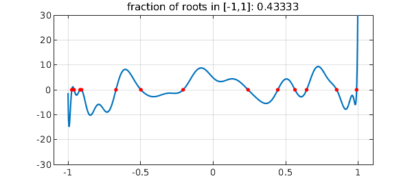

Recently I heard a talk by Igor Pritsker of Oklahoma State University at which he discussed a theorem of Das in 1971 about the roots of random real polynomials [1,3]. This can be very nicely illustrated in Chebfun.
Das's result asserts that for a random polynomial on $[-1,1]$ with real coefficients, the fraction of roots that lie in $[-1,1]$ will be about $1/\sqrt 3 \approx 0.57735$. By a random polynomial on $[-1,1]$, we mean a linear combination of Legendre polynomials (normalized by 2-norm on $[-1,1]$) with random independent coefficients drawn from the standard normal distribution. For such polynomials, the fraction of roots in $[-1,1]$ approaches $1/\sqrt 3$ as $n\to\infty$ with probability 1.
Here for example is a random polynomial of degree 30:
rng('default');
n = 30;
cleg = randn(n+1,1); % Legendre coeffs
ccheb = leg2cheb(cleg,'norm'); % Chebyshev coeffs
p = chebfun(ccheb,'coeffs');
LW = 'linewidth'; FS = 'fontsize'; MS = 'markersize';
plot(p,LW,1.6), axis([-1.1 1.1 -n n]), grid on
rr = roots(p);
hold on, plot(rr,p(rr),'.r',MS,16), hold off
ratio = length(rr)/n;
title(['fraction of roots in [-1,1]: ' num2str(ratio)],FS,12)

Here are its roots in the complex plane, both real and complex:
r = roots(p,'all'); plot([-1 1],[0 0],'k',LW,1), grid on hold on, plot(r,'.r',MS,12), hold off xlim([-2.5 2.5]), axis equal set(gca,'xtick',-2:2)
You might guess by looking at the first of these pictures that this was a polynomial of odd degree, but of course it is of even degree. So there must be a real root outside $[-1,1]$, as indeed we see in the second picture.
Now let's construct ten random polynomials of degree 1000 and print the fraction of roots in $[-1,1]$ for each:
n = 1000; data = []; for k = 1:10 cleg = randn(n+1,1); % Legendre coeffs ccheb = leg2cheb(cleg,'norm'); % Chebyshev coeffs p = chebfun(ccheb,'coeffs'); rr = roots(p); ratio = length(rr)/n; data = [data ratio]; disp(['fraction of roots in [-1,1]: ' num2str(ratio)]) end
fraction of roots in [-1,1]: 0.592 fraction of roots in [-1,1]: 0.566 fraction of roots in [-1,1]: 0.597 fraction of roots in [-1,1]: 0.581 fraction of roots in [-1,1]: 0.572 fraction of roots in [-1,1]: 0.584 fraction of roots in [-1,1]: 0.575 fraction of roots in [-1,1]: 0.573 fraction of roots in [-1,1]: 0.576 fraction of roots in [-1,1]: 0.575
The mean for the whole experiment is pretty close to $0.577$,
mean(data)
ans = 0.579100000000000
One could vary these experiments in all kinds of ways, for example defining random polynomials via Chebyshev or more generally Jacobi expansions or by interpolation of random data in Chebyshev or other points. The case of Jacobi expansions is considered in [2], though the proofs there are not complete.
References
-
M. Das, Real zeros of a random sum of orthogonal polynomials, Proceedings of the American Mathematical Society, 27 (1971), 147-153.
-
M. Das and S. S. Bhatt, Real roots of random harmonic equations, Indian Journal of Pure and Applied Mathematics, 13 (1982), 411-420.
-
J. E. Wilkins, The expected value of the number of real zeros of a random sum of Legendre polynomials, Proceedings of the American Mathematical Society, 125 (1997), 1531-1536.